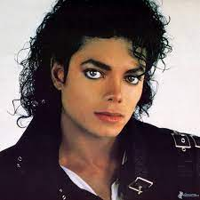
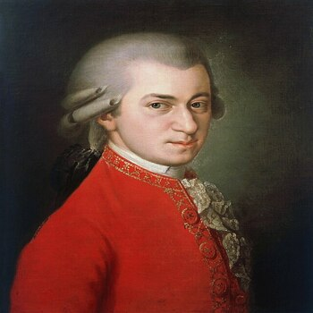
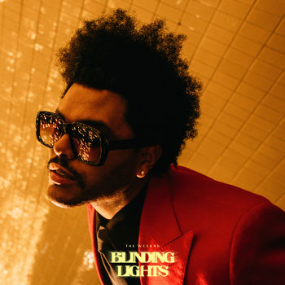

Musicians Througth the Years
They make history
Musicians for generations
Michael Jackson
Michael Jackson, born August 29, 1958 in Gary, Indiana, was a global icon in music and entertainment. Recognized as the "King of Pop," Jackson left an indelible mark on the industry. His impact was not limited to music alone; Jackson revolutionized the way music videos were conceived, with innovative productions that accompanied hits like "Billie Jean." His skill in dance, particularly the moonwalk, became his hallmark.
Mozart
Wolfgang Amadeus Mozart, born on January 27, 1756 in Salzburg, Austria, was a prodigious composer and classical musician of the Classical period. From an early age, he showed extraordinary talent in music, being recognized as a child prodigy. Mozart composed more than 600 works in various musical genres, from operas and symphonies to chamber music and piano works.
The Weeknd
The Weeknd, whose real name is Abel Makkonen Tesfaye, is a prominent Canadian singer, songwriter and producer born on February 16, 1990 in Toronto. He became famous in the early 2010s with his distinctive blend of R&B, pop and electronic music. His provocative style and introspective lyrics are highlighted in hits such as "Ca n't Feel My Face", "Starboy" and "Blinding Lights", the latter becoming a global phenomenon.
More Than Normal Person
The musicians create an incredible era from the year 0 of the world. For example, Mozart, Bethoven, Chopin, are composers of the classical and romantic season of the 1600s, 1700s. I think everyone knows who they are. But today we know Michael Jackson (king of pop), Queen, Madonna, Prince, Elvis Presley and many more musicians. Each one has something that they put into their music and we feel that, that's why we love them.